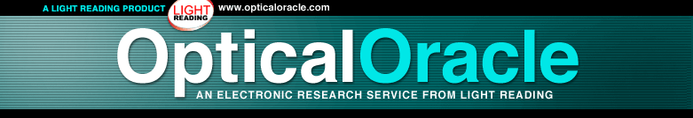

| software |
| home page |
|
| . GandhiServe Foundation "Many thanks for your prompt replies to my e-mails and for providing excellent service and feedback. Our photo library consists of more than 10,000 photographs. At present over 1,000 photos are digitized and available online. We represent the finest collections of photographs of Gandhi taken by relatives, associates, professional, and amateur photographers. |
|  |